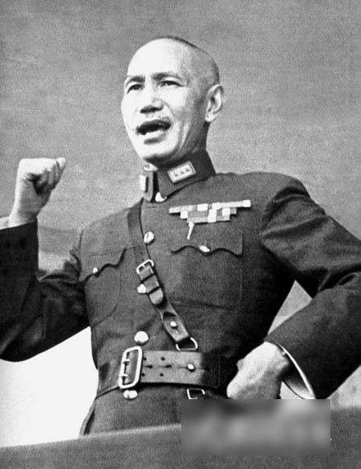

 1925 m. tapo Nacionalinės revoliucinės armijos vadu. 1928 m. jis buvo paskelbtas generalisimu ir Nacionalinės vyriausybės pirmininku, kuriuo išbuvo iki 1932 m. 1948 m. gegužės 20 d. išrinktas Kinijos prezidentu, bet 1949 m. sausio 21 d. atsistatydino. Komunistams laimėjus Kinijos pilietinį karą su vyriausybe persikėlė į Taivaną. 1950 m. kovo 1 d. pradėjo eiti Kinijos Respublikos prezidento pareigas. Perrinktas 1960, 1966, 1972 m. Mirė 1975 m. balandžio 5 d. 23:50 nuo inkstų nepakankamumo.